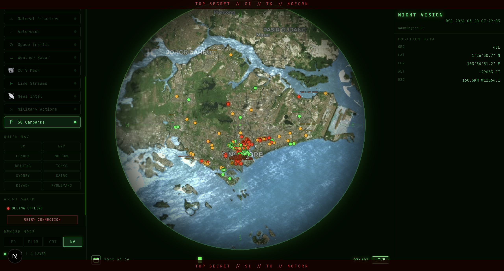

Real-time carpark intelligence on a 3D globe. 129 carparks. Live data. One afternoon.
Matt Johnson — Solo Team

Flights, satellites, earthquakes, asteroids, weather, CCTV cameras, news, military actions, live streams
No local transport, no parking, no MRT, no taxis. The dashboard ignores the city it's being demoed in.
Real-time carpark availability from LTA DataMall. 129+ locations. Color-coded dots + heatmap overlay.
Every layer in WorldView follows a 6-file pattern. The carpark layer is file #10, not a hack.
CarParkAvailabilityv2
paginated, 500/page
/api/carparks
60s server cache
useCarparks()
60s client polling
Zustand
carparks[]
CesiumJS entities
points + ellipses
Each carpark renders as a 6px dot. Color indicates real-time availability:
Each carpark also renders a 500m radius semi-transparent ellipse (12-18% alpha). In dense areas like the CBD, dozens overlap to create a natural heatmap — no heatmap library needed.
Launched an Explore agent to read all 9 existing layers, the store, hooks, and sidebar. Returned a complete architecture map in one shot. This meant the implementation was right the first time.
Ran two agents simultaneously: one exploring WorldView architecture, one researching Singapore transport APIs. Both returned results in parallel — huge time savings.
Used Plan Mode to design the full 8-file implementation plan. Caught the LTA pagination requirement and location parsing edge cases before writing a single line.
Claude read an unfamiliar 10,000+ line codebase and replicated its exact architectural patterns — matching naming conventions, file organization, Cesium entity lifecycle, and Zustand integration. The carpark layer is indistinguishable from the original 9.
LTA Taxi-Availability API returns GPS positions of all available taxis. Thousands of green dots swarming across Singapore. The visual showstopper.
LTA PCDRealTime endpoint. Color-coded MRT stations showing crowding levels. Useful and unique.
Integrate total carpark capacity dataset so colors show percentage full, not just absolute lot counts.
Cache carpark snapshots and replay them via the timeline slider. See parking patterns emerge over hours.
github.com/matthewgjohnson/worldview_oss